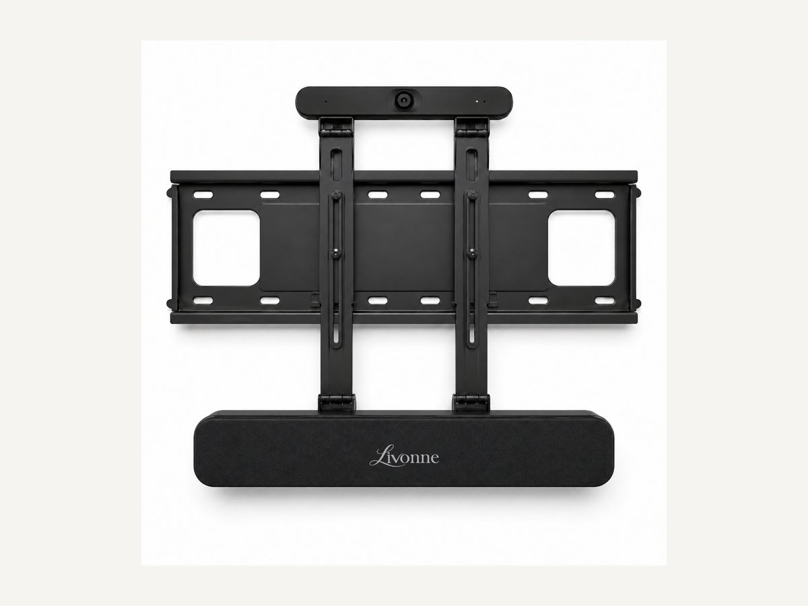
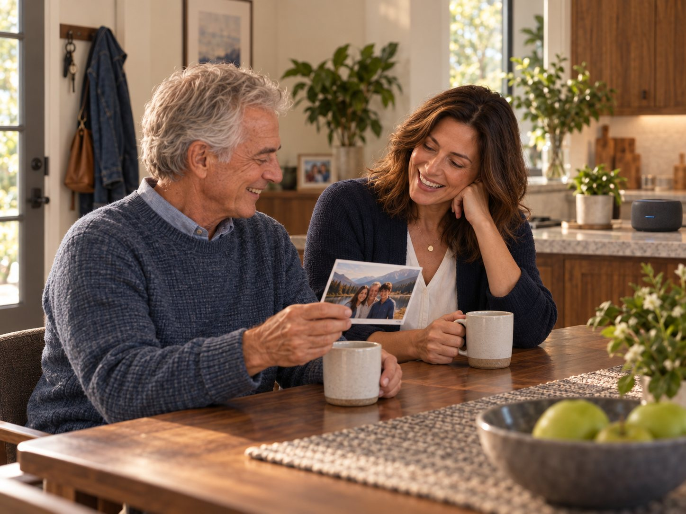

Device 1 of 5
Livonne Surface Core
The primary visible assistant, bringing orientation, reminders, family connection, and everyday guidance to a screen where they can be seen when they matter.

Livonne Care helps people age at home with dignity, independence, and familiar routines intact. It provides patient memory and everyday support while adapting as a person’s needs change.
For family, it reduces the invisible work of remembering, checking, coordinating, and worrying. The goal is not to remove family from care. It is to give them enough support that visits can feel like family again.

1 / 5

The Care story
Ron wants to remain in his own home. Maya wants to help him without becoming the operating system for his entire life.
Their story begins with repeated questions, interrupted workdays, shifting plans, and the quiet fear of becoming a burden. It follows Livonne from the first box they open through the routines, safeguards, and trusted support that allow Ron to keep living on his own terms.
And it shows what happens when Maya can finally walk through her father’s door without beginning an inspection.
She gets to arrive as his daughter.